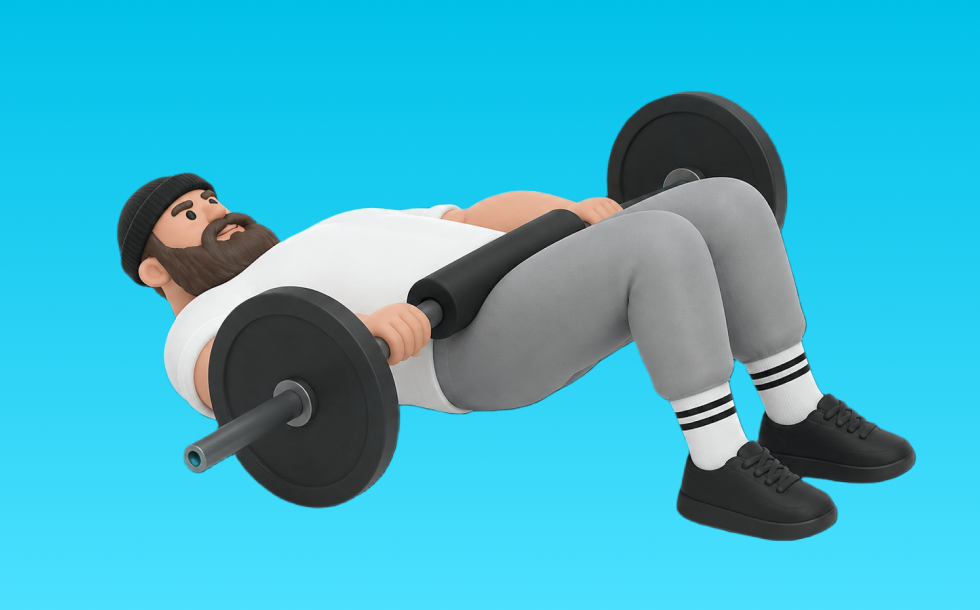

グルートブリッジベンチ

グルートブリッジベンチとは、ベンチとバーベルを使って「股関節を伸ばす」動作でお尻（臀筋）、太もも裏（ハムストリング）を鍛える種目です。肩をベンチに乗せ、骨盤を持ち上げて臀部を締め、ゆっくり戻す動作を繰り返します。臀部の筋力・筋量アップが期待できます。
- 対象部位
- 脚
- 器具
- バーベル
- 記録形式
- 重量・回数
- 別名
- ベンチグルートブリッジ / バーベルグルートブリッジ
YouTube動画
-
【高さは不要】９割の人が間違っているベンチプレスの正しいブリッジの組み方
-
【ベンチプレス】筋肉をほぐしてベストなフォームを作ろう！
-
確実に重量が上がる「エブリベンチ」のやり方を徹底解説します
-
グルートブリッジ効果的やり方実演（女性の反り腰改善）
-
【やらないと絶対に損】強い人はみんなやってる一瞬でベンチの重量が上がる圧のかけ方
-
お尻の覚醒エクササイズ：グルートブリッジ！筋肉をまず覚醒して、最大の結果を出すトレーニング！ヒップリフト・美尻を目指して、よりお尻を効果的にターゲット Part 2
-
【2025年最新】正しいベンチプレス講座／ベンチプレスのテクニック
-
【強い人は必ず立ってる】体が硬い人でも組める胸郭の立たせ方講座
-
ベンチプレスの重量が伸びない人の３つのダメなフォーム
YouTubeショート
-
このマシン見つけたら真似してみて！ #尻トレ #ジムトレーニング #マシントレーニング #筋トレ動画 #トレーニング動画 #gymworkout #workoutvideo
-
【ベンチプレス100kgあげる河野玄斗】 #shorts #河野玄斗 #study #筋トレ
-
多くの人が間違うクラムシェル！ヒップアップに重要
-
ベンチプレスやりこんでた時期あった？ #ベンチプレス #samgetitright #サム切り抜き #ジョージ #メンズコーチ #兄弟 #筋トレ #フィットネス #ボディビル #ジム #筋肉
-
ジムでベンチプレス100kg以下の人を見た常連の反応 #shorts
-
スミスグルートブリッジ
-
お尻を力強く鍛えるグルートブリッジ【家トレ+】
-
グルートトレーナーの正しい使い方解説！🍑美尻を目指すあなたへ💪✨
-
100倍効果的にお尻を鍛える筋トレ方法 #shorts
-
グルートキックのやり方
-
筋トレ初心者はジムで〇〇と思われています。#shorts
-
【ジムあるある】使い方がわからないマシンTOP3#ジムあるある#あるある動画#あるあるネタ#フィットネス女子
-
スクワットVSヒップスラストお尻の筋肥大に効果的なのはどちら？ #フィットネス #筋トレ
-
ヒップスラストはコレ使うと便利 #筋トレ女子
-
ダンベル・グルートブリッジ【紹介編】
-
腰上げベンチ160kg
-
意味のない筋トレTOP３ #shorts #筋トレ #タケタコタン渾身の演技披露
-
ベンチプレスの重量が伸びない人のダメな習慣【山本義徳切り抜き】#shorts
-
【筋肉つかない】自重トレ3種目 #自重トレーニング #筋トレ #フィットネス
-
【あるある】女子がジムでジロジロ見られる理由【全トレーニー心の声】
-
【忙しい人向け】30分で終わる脚トレ#shorts #youtubeshorts #筋トレ大学 #筋トレ #脚トレ
-
世界でバズったクライマーの筋トレ
-
[SYNERGY. Fitness Studio] ブーティビルダーヒップスラストのやり方 #筋トレ #エクササイズ #尻トレ
-
グルートブリッジ
-
【山岸秀匡 】ベンチプレス100キロ何回上げますか？＃shorts
-
22歳 66kg ベンチプレス200kg #shorts
-
ベンチプレスの重量に驚くサイヤマン
-
【腰を痛めないヒップリフトのコツ】
-
正しいブルガリアンスクワット4つのポイント #筋トレ
-
How to do weighted glute bridge from a bench | Best Butt Exercises
動作方法
- 背中を中立に保ち、股関節から動き始める
- もも裏の張りを感じる位置まで下ろす
- 足裏で床を押して立ち上がる
動作ポイント
- 背中を丸めない
- 膝を伸ばしきらない
- バーや重りを体から離しすぎない
ワンポイントアドバイス
- ウォームアップで股関節と足首を動かす
- 高重量の日はセーフティ設定を確認する
目的別回数設定
目的や体力に応じた一般的な目安です。無理のない範囲で調整してください。
- 筋力アップ
- 1〜5回
- 筋肥大
- 6〜12回
- 持久力アップ
- 13〜20回
YouTube動画について
動画はYouTubeの公開情報をもとに表示しています。内容は投稿者によるもので、Biggrによる監修ではありません。
アプリを入手
筋トレやトレーニングの記録はBiggrにお任せください。今すぐ無料で使い始められます。